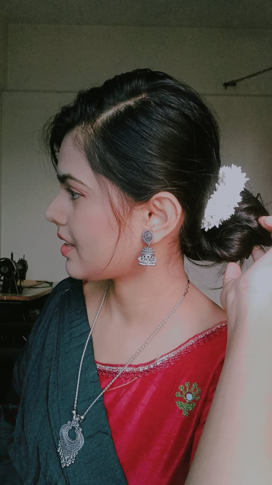
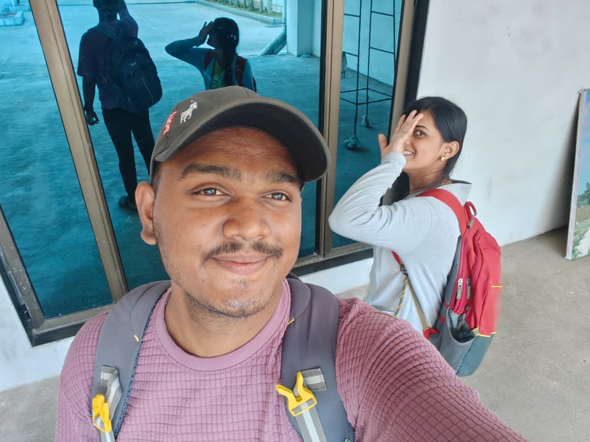
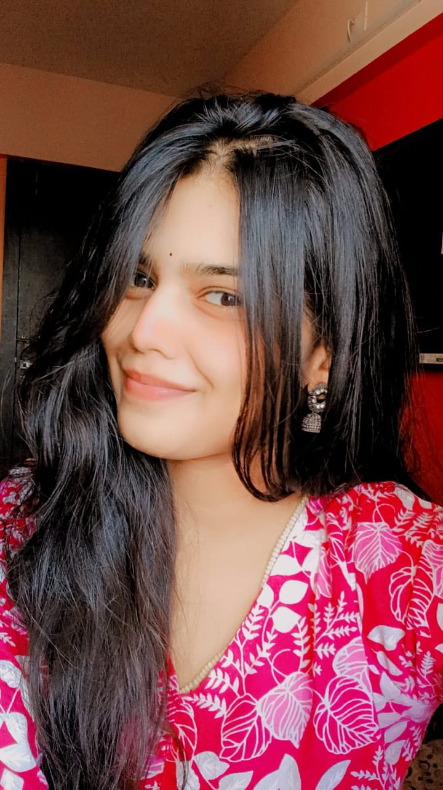

A page just for you
Every memory we made is stored here — not to pressure you, but to show you how much every small moment with you meant to me.
From my heart
I know I've said sorry many times. I know the word has lost its weight because I kept repeating it without understanding what I was actually sorry for. So I don't want to just say it again — I want to mean it, differently this time.
You told me once that you observed many things but didn't always speak. I didn't listen to that. I was so afraid of losing you that I kept asking for reassurance instead of giving you the one thing you actually needed — someone who could just be calm and be present.
You also told me something I've been thinking about deeply: you don't want a drastically changed version of me. You want small improvements — and you still want to recognise the real me. That was the kindest thing anyone has said to me in a long time. Because it meant you weren't giving up on who I actually am.
I'm not here to ask for another chance or to put pressure on you. I just want you to know that I have been genuinely reflecting. I've been learning to sit with my anxiety instead of putting it on you. I've been practising listening instead of panicking.
You have your own struggles, your own family pressures, your own inner world — and I wasn't always making space for that. You deserve someone who asks "how are you?" and actually waits for the answer.
So this is me — not begging, not breaking — just showing up honestly and saying: you matter to me. Our moments matter to me. And I'm choosing to be better, not because I want something in return, but because you deserve that from me.
Thank you for still being there. For still checking in. For "we will think about this" — those five words meant everything.
Where it began
Computer class. I first noticed you there. I didn't say much. But I noticed everything.
The reconnection
A message. You replied. And just like that, everything started again — better than before.
Long calls & late nights
Hours on video call. Talking about everything and nothing. Those nights felt like home to me.
The beach
We were together. The world was small and simple. I wish I had been more careful with your comfort. That memory still matters to me.
What you said
"I don't want drastically change in yourself but small changes can make things better." I'm holding onto those words.
Now
I'm not the same person who panicked. I'm learning to be steady — for myself, and hopefully, for you.
Our memories
Every photo here is a moment I'd relive in a heartbeat.
I don't need you to forgive me today.
I just need you to know I'm trying.
No pressure. No last chances. No "please". Just me, being honest, being present, and becoming someone worthy of your trust — one small day at a time.
Always your original version